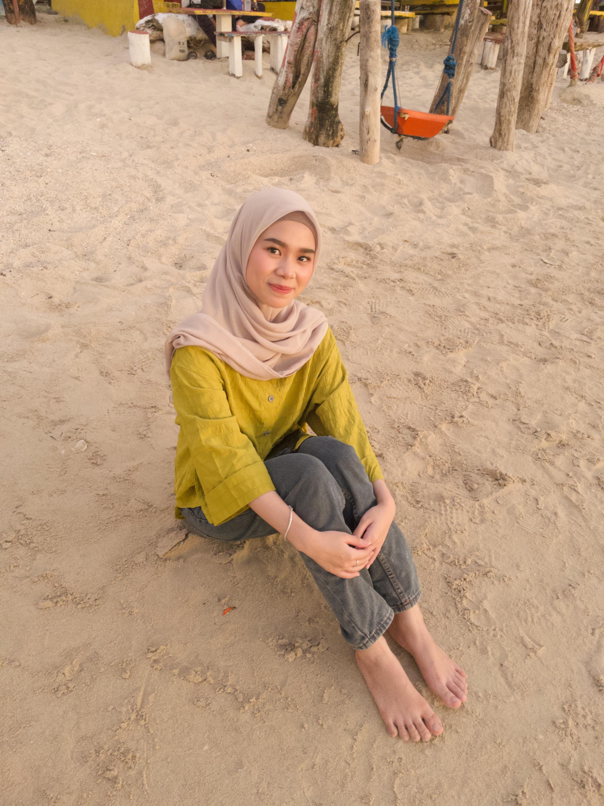
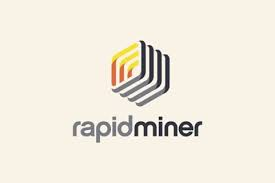
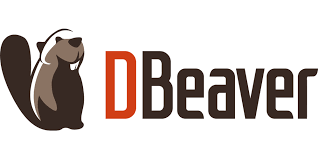
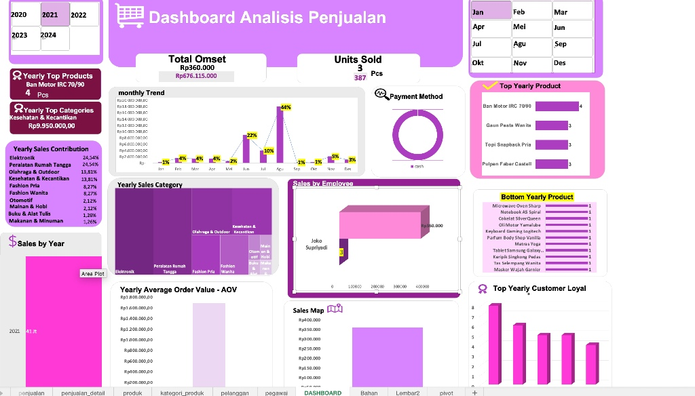
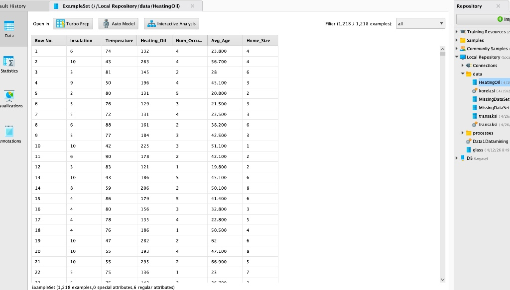
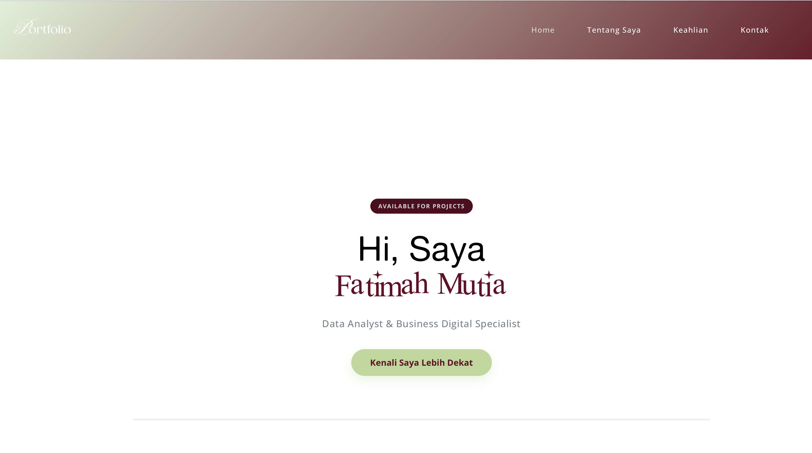
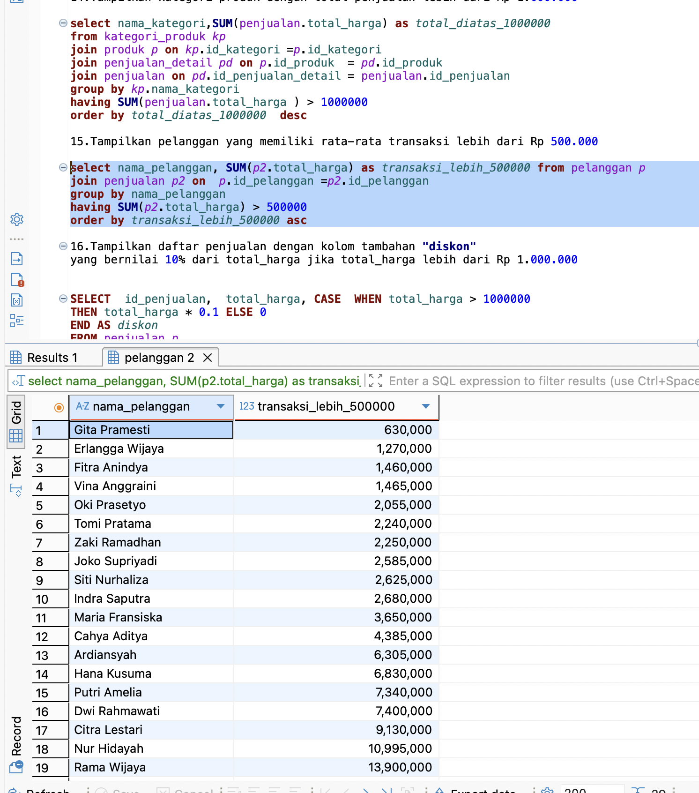

Available For Projects
Hi, Saya Fatimah Mutia
Data Analyst & Business Digital Specialist



Get Info
About Me
Mahasiswa semester 4 Prodi Bisnis Digital dengan keahlian dasar dalam penggunaan VS Code, pengelolaan database, dan analisis data menggunakan RapidMiner. Telah berhasil merancang dashboard penjualan interaktif untuk kebutuhan bisnis. Selain dunia teknis, saya juga aktif sebagai content creator, fokus pada pengembangan konten digital kreatif yang inovatif.
Tools &
Projects
Tools


Projects

Dashboard Penjualan
Visualisasi data interaktif untuk memonitor performa bisnis secara real-time.

Data Mining with RapidMiner
Pengolahan dan analisis data mendalam untuk menemukan pola bisnis yang inovatif.

Website Development
Pengembangan antarmuka website yang responsif dan modern menggunakan VS Code.

Database Management with DBeaver
Implementasi dan pengelolaan struktur database relasional untuk efisiensi penyimpanan data bisnis.
Contact Us
Say Hello
I am available for projects. If you are interested in collaborating, please feel free to fill in your name, email, and your message below.